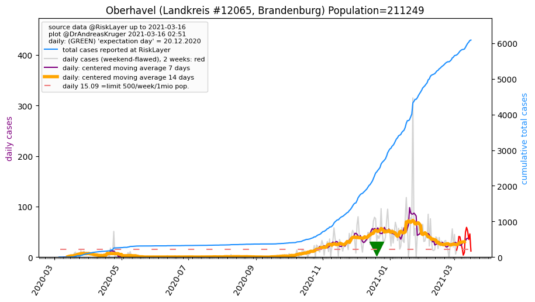
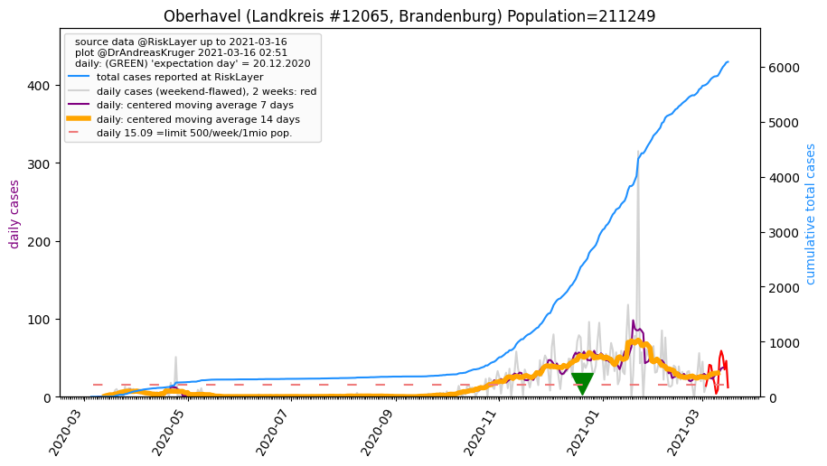

")
")
")

")
| Berlin_KS (0.0 km) |
Potsdam_KS (26.7 km) |
| Barnim_LK (41.2 km) |
Oberhavel_LK (47.0 km)  |
| Teltow-Fläming_LK (48.4 km) |
All plots are regenerated with new data every night. Beware this temporary hotspot is an experimental page - it might get removed, so please do not link to it. Instead link to project http://tiny.cc/cov19de.